Geologia
A geologia é uma ciência da natureza, que estuda o planeta Terra, sua formação, evolução e composição rochosa.
- Ela foi dividida em três partes:
A geologia é uma ciência da natureza, que estuda o planeta Terra, sua formação, evolução e composição rochosa.
Na geologia (mais especificamente na geomorfologia), a morfogênese trata da formação dos relevos.
A morfogênese do relevo possui estreita relação com a pedogênese, que seria algo como a morfogênese do solo, pois a formação de diferentes tipos de solo possui grande influência sobre os diferentes tipos de relevo.
São mudanças físicas e químicas que alteram a superfície terrestre.
São divididos em processos endógenos (processos que acontecem internamente na Terra, os formadores de relevo) e exógenos (processos que ocorrem externamente, modoficadores de relevo).
Dentre os formadores de relevo, temos a epirogênese e a orogênese.
Epirogênese são as pressões que ocorrem no interior do continente, são lentas, são as principais responsáveis pelas falhas tectônicas.
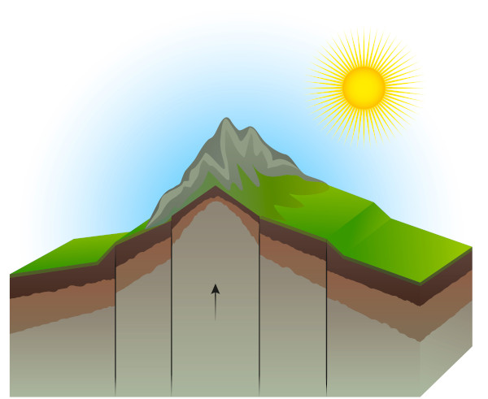
Epirogênese negativa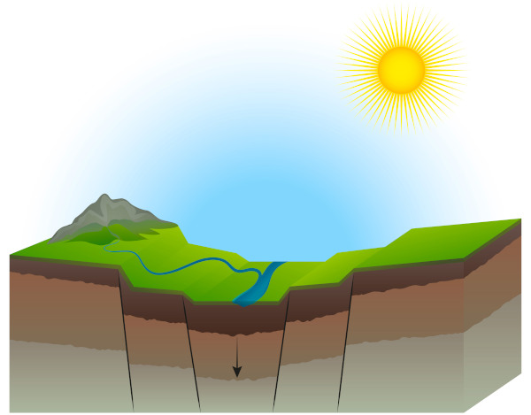
Orogênese, são as pressões ocorridas a decorrer do choque das placas tectônicas, forma os dobramentos modernos (monatanhas gigantes e novas), é bem mais rápida que a epirogênese.
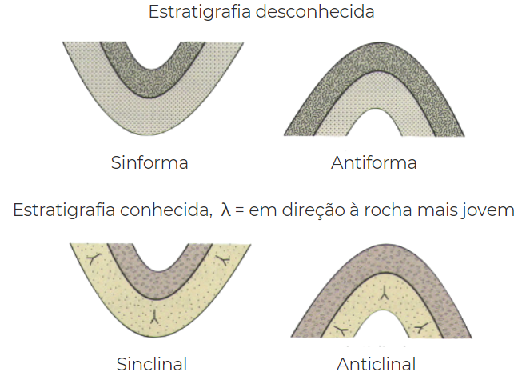
Nomeamos Sinforma os de convexidade para cima, e antiforma o contrário.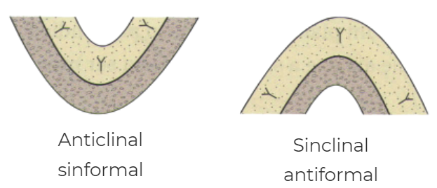
Outro processo endógeno é o vulcanismo, ele consiste na expulsão de magma de dentro da Terra.
O magma elevado pelas correntes de convecção empurra o solo até rachar e abrir um furo.
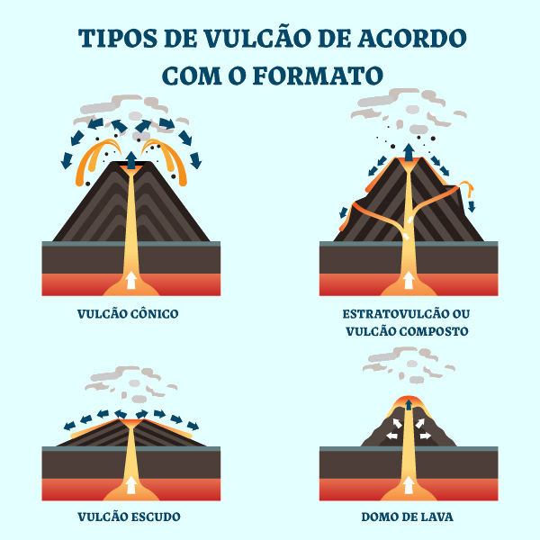
Os cones, são vulcões com magma de baixa viscosidade, formato de cones.Os terremotos são fenômenos naturais causados pelo deslocamento das placas tectônicas. Esses tremores de terra são oriundos de forças internas da superfície terrestre, associadas ao tectonismo do planeta por meio dos movimentos das placas tectônicas.
A morfodinâmica na geologia é a área que estuda a transformação dos relevos. É o processo que tomou após a morfogênese, até chegar na área atual de estudo da morfologia.
Nos processos endógenos temos a erosão e o intemperismo.
O intemperismo é o processo de degradação rochosa, comumente chamado de "apodrecimento rochoso".
A erosão consiste no desgaste do solo e das rochas de áreas mais altas para áreas mais baixas, ocasionando a sedimentação dos detritos. Ao longo dos anos, esse desgaste altera paisagens, cursos de rios, relevos, entre outros.
Os causadores da erosão são os chamados agentes geomorfológicos , eles promovem a erosão, transporte e deposição de sedimentos
Estes agentes geomorfológicos são: a água (rios, mares, chuva...), o gelo (geleiras), e o vento.
A morfologia é área de estudo da geologia, responsável por nomear os tipos de relevos com base em características comuns, ela não analisa sua formação, apenas o atual relevo.
Existem diversos tipos de relevos, os principais são:
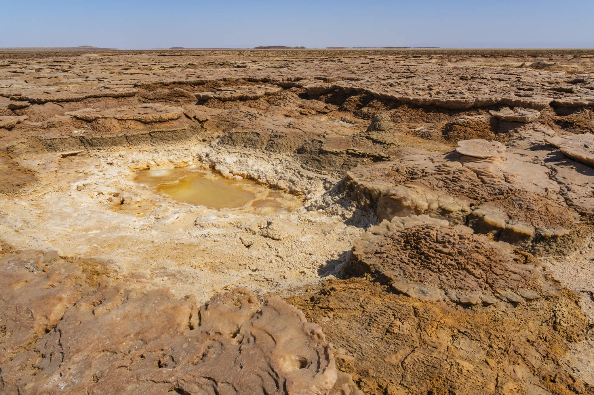
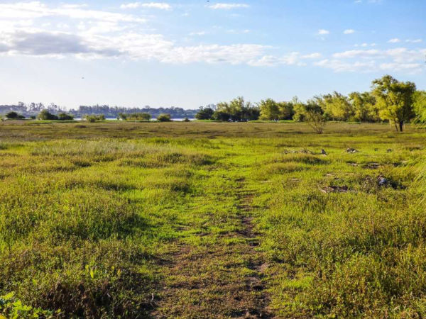
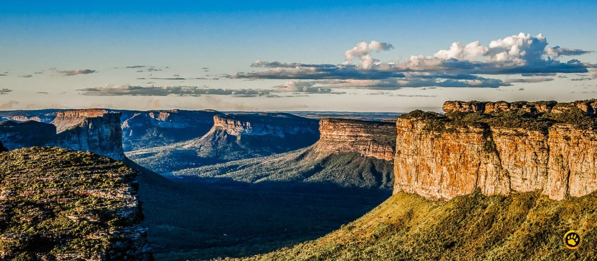
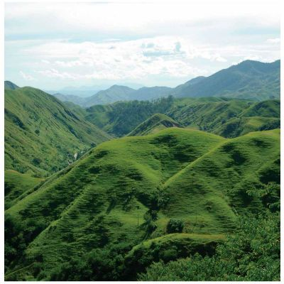
Relevo com +300 metros, podendo ser plano (chapada) ou ondulado (morro).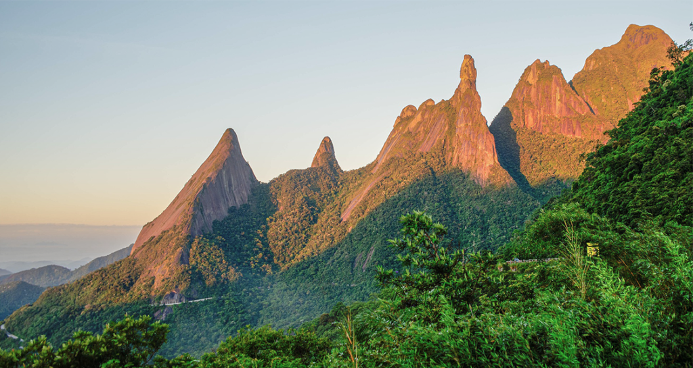


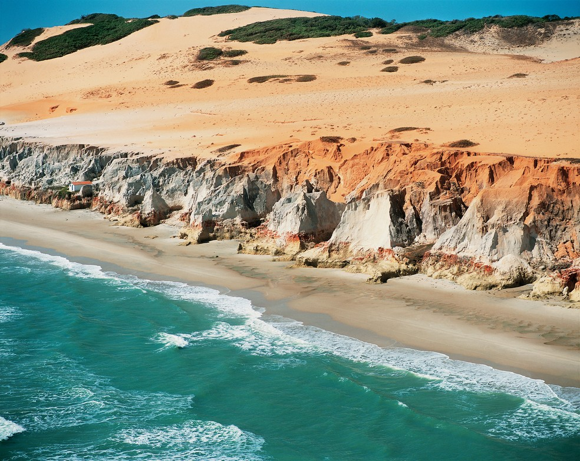
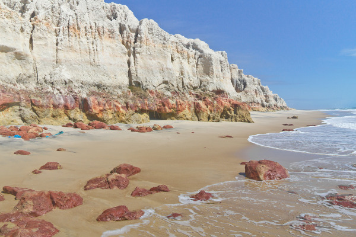
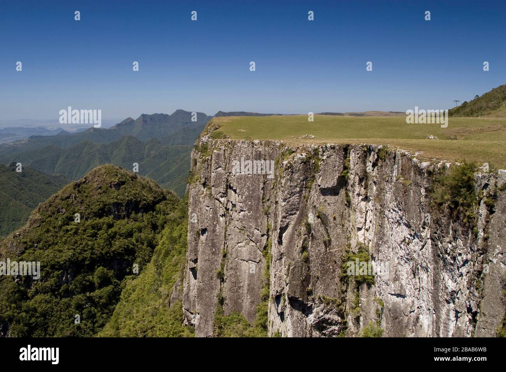
Também dividimos os relevos em: Dobramentos modernos e Crátons.
Já estudamos os dobramentos modernos então vamos aprender sobre os Crátons.
Os crátons são regiões estáveis das placas tectônicas que permanecem intocáveis.
Eles são divididos, por sua formação, em Escudos Cristalinos e Plataformas marginais/Bacias Sedimentares.
Os escudos cristalinos são os crátons formados pelo processo de erosão, eles afloram na superfície e são erodidos com o tempo, em relação às bacias sedimentares, são relevos elevados.
São zonas ricas em metais, e é possível encontrar até metais em suas superfícies.
Por sua vez, as bacias sedimentares são o contrário, relevos extremamente rebaixados, formados pelo processo de extratificação sedimentar intenso.
Contudo, é rico em petróleo e gás natural.
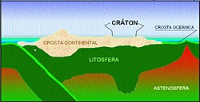
No brasil, não temos dobramentos modernos, mas temos 64% da superfície em bacias sedimentares e 36% em escudos.
O brasil sofre uma erosão intensa, fica no centro da placa tectônica sul-americana e tem relevo extremamente rebaixado.
Em 1949, Araldo de Azevedo, definiu que o Brasil era composto por planícies e planaltos.
Em 1962, Azis AB'Sáber, usou da climatologia para reescrever o mapa brasileiro repartindo o mapa de Araldo, mas ainda apenas com planaltos e planícies.
Na década de 90, Jurandyr Ross tirou fotos de avião de todo o Brasil e juntou o quebra-cabeça formando o mapa do Brasil, diferente de seus colegas anteriores, ele afirmou que o Brasil possuía, também, depressões.
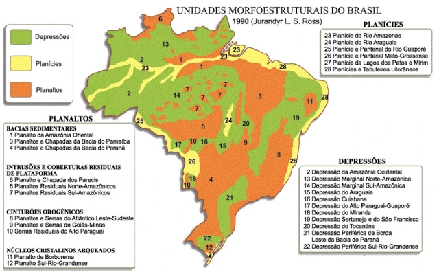
O planalto de Borborema, no nordeste é uma região serrosa de extrema importância, pois ela quem traz o clima semiárido da região.
A água vinda do atlântico é barrada pelo planalto, por suas elevadas altitudes (média 500m, ápice 1300m).
Dessa forma, as chuvas não caem na região oeste ao planalto, trazendo o sertão.
No planalto, o clima é semi-árido tropical, com fertilidade do solo baixa e vegetação diversificada.
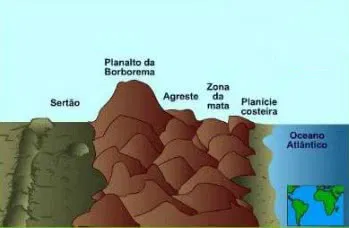